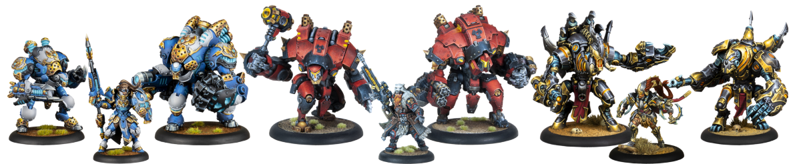

What is Warmachine & Hordes?
Warmachine and Hordes are two tabletop miniatures wargames published by Privateer Press, a gaming company known for its distinctive setting and miniatures. Both games are set in the Iron Kingdoms, a rich and detailed fantasy world filled with steampunk, magic, and epic conflicts.
-
Warmachine
Warmachine is a fast-paced skirmish-level wargame that focuses on intense battles between powerful warcasters and their mechanized warjacks. In this game, players take on the role of a warcaster, a powerful and magically gifted leader who commands an army of warjacks, which are large steam-powered, mechanical constructs equipped with devastating weaponry. The game emphasizes strategy, positioning, and resource management.
Each warcaster has unique spells and abilities that can dramatically influence the battlefield. Warjacks can be customized with various weapons and equipment to suit different tactical situations. Warmachine is renowned for its balanced gameplay and competitive tournament scene

Read more about Warmachine → -
Hordes
Hordes is a sister game to Warmachine, also set in the Iron Kingdoms. In this game, players assume the role of powerful warlocks who lead savage and monstrous creatures known as warbeasts into battle. Unlike the mechanized warjacks of Warmachine, warbeasts are primal and ferocious, tapping into the natural energies of the world to unleash devastating attacks.
Warlocks have their own set of unique spells and abilities and can channel fury, a volatile resource generated by their warbeasts' aggressive actions. The game revolves around resource management, as warbeasts can become uncontrollable if not carefully managed.

Read more about Hordes →
The key distinction between Warmachine and Hordes lies in the types of armies they feature: Warmachine focuses on armies led by warcasters and composed mainly of warjacks, while Hordes centers on armies led by warlocks and predominantly consisting of warbeasts.
Both games offer a rich and immersive gaming experience, combining deep lore, stunning miniatures, and engaging tactical gameplay. Players can collect and paint their armies, then engage in thrilling battles against opponents in a world of high magic, steam-powered technology, and brutal combat.